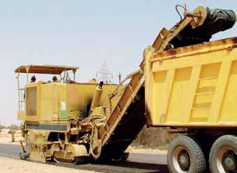

TAGECO JSC, a Greek-Libyan Joint Stock Construction Company, was
established in early 2007. The main shareholders have been in the
international construction industry for over thirty years and have
fully committed their accumulated expertise and resources to the
company.
TAGECO JSC was established in accordance with the commercial law No.
(21) and the General Popular Committee Decision No. 443/2006, between
Greek and Libyan individuals, having over 25 years of experience in
the Libyan construction industry.
TAGECO JSC is registered with the Ministry of Transportation, ODAC and
HIB, which comprise its main clientele.
The company owns a considerable number of construction equipment,
including crushers, batching plants, earthmoving, paving and
incidental equipment. The equipment allows the company to participate
in substantial infrastructure projects, having a backlog in the range
of 215 mil LD.
TAGECO JSC is certified according to ISO 9001:2000 and OHSAS
18001:2007, demonstrating the strong management's commitment to both
quality assurance and health & safety.
Our range of activities includes:

Highway construction, including earthworks, pavements and structures
Airports and all accompanying components
Infrastructure works, including sewage, water supply, pumping stations, street lighting and landscaping
Projects
Ongoing
Maintenance of Brak-Sebha Road, awarded from the Organization of
Transportation Projects – Ministry of Transportation, having a
contract value of 48.2 million LD, ($38.3 million), to be
completed in 2013
Construction of Al Qatroun - Tajerhi Road, awarded from the
Organization of Transportation Projects – Ministry of
Transportation, having a contract value of 57 million LD ($45.2
million), to be completed in 2014
Construction of water supply and sewage networks, street
lighting and road paving works in Traghen city – 3rd stage,
awarded from the Organization for the Development of
Administrative Centres, (ODAC), having a contract value of 87.5
million LD, ($69.4 million), to be completed in 2014
Completed
Execution of additional works of sewage network, street lighting
and road paving in Traghen city, awarded from ODAC, having a
contract value of 16.67 million LD, ($13.2 million), completed
in 2010
Construction of water supply and sewage networks, street
lighting and road paving works of Traghen city- 2nd phase,
awarded from ODAC, having a contract value of 14.5 million LD,
($11.5 million), completed in 2011
Full depth maintenance of the main runway of Sebha international
airport, awarded as subcontract from African Engineering Co,
having a contract value of 11.2 million LD, ($8.9 million),
completed in 2008
Facilities
The company maintains a head office in Tripoli and a main camp in the
outskirts of Sebha, on a 10 ha lot, including 4,000 sq m of buildings
and 6,000 sq m of hangars and sheds.
The main camp is fully equipped with spacious offices, housing units
for 400 workers, central laboratory, and workshop and storage
facilities
The workshop is equipped with overhaul and machinist shops, oxygen
production plant, spare parts & construction materials warehouses, and
other facilities necessary for the proper support of our construction
activities.
Logistics
Within our firm’s policy of improving and upgrading its operations, we
promote and apply:
Quality management system (QMS)
A certified Quality Management System (QMS) in accordance with the
international standard ISO 9001:2008
Health and safety system
A certified Health & Safety Management System (H & SMS), in
accordance with the standard OHSAS-18001:2007, fully complying
with the Health and Safety rules.
Quality control and Quality assurance (QC/QA)
Our results oriented central QC/QA department in Sebha is well
known for its superior work, providing high standard laboratory
support to our site crews and exceeding the expectations of our
clients.
Enterprise resourse planning system (ERP)
It consists of an integrated ERP system, including general
accounting, inventory control and commercial management.
Human Resources
Our technical staff consists of highly skilled professionals, with
experience in the execution and management of construction projects
and includes Libyan and expatriate personnel, exceeding 700 team
members with the present work backlog.
Staffing
17 Engineers
40 Superintendents, foremen and headmen
32 Administrative staff
170 Heavy equipment operators and drivers
220 Skilled labors
240 Unskilled labors
Training
In order to achieve maximum efficiency and productivity, TAGECO JSC
continuously organizes training sessions of technical and HS nature,
adapted to the type of work and environment in which the company
operates.
Construction Equipment
In order to cope in a highly competitive environment, TAGECO JSC is
continuously investing in the acquisition of new plant and equipment.
In this manner the company is not dependent on third parties
resources, and has the ability to intervene swiftly at any call, no
matter how remote the location or urgent the situation.
In the light of the above policy, the company owns and continuously
renovates its sizable fleet of construction equipment, with particular
emphasis on earthmoving and paving machinery, delivering excellent
results to its satisfied clients. Our effort is also backed by an
adequate number of production plants (crushers, asphalt & concrete
batching plants and base course mixers).
Equipment summary list
Passenger cars all types
92
Trucks & tractor heads all types
117
Trailer tanks all types asphalt-fuel-water, cement silos